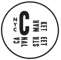

Canal Street Market is a carefully curated retail market, food hall & community space open year-round at 265 Canal Street. Support Small Business this weekend!

A New Kind of Market
Merging retail, food, art, and culture, Canal Street Market highlights top retail and design concepts, restaurants, and up-and-coming players in the downtown New York City community.
Retail Market Hours:
Fri - Sun: 11:00AM - 7:00PM
Food Hall Hours:
Mon - Thurs: 11:00AM - 6:00PM
Fri - Sun: 11:00AM - 7:00PM